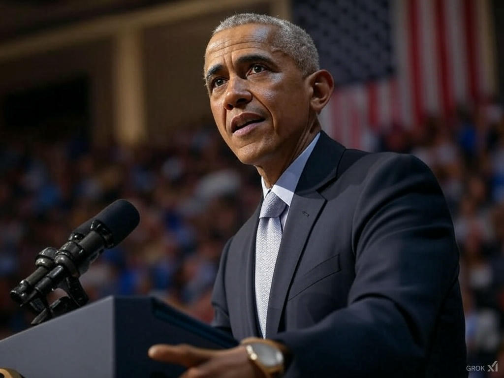

Global Climate Summit 2025: Breakthrough Agreement
By Sarah Thompson | Published: February 15, 2025 | Category: Politics
At the Global Climate Summit held in Paris on February 15, 2025, representatives from over 190 countries signed a landmark accord to reduce global carbon emissions by 50% by 2030, marking a pivotal step toward combating climate change. The agreement includes financial aid for developing nations and innovative renewable energy initiatives. This historic pact is seen as a turning point in international environmental policy, with experts praising its ambitious targets and actionable strategies.
Comments